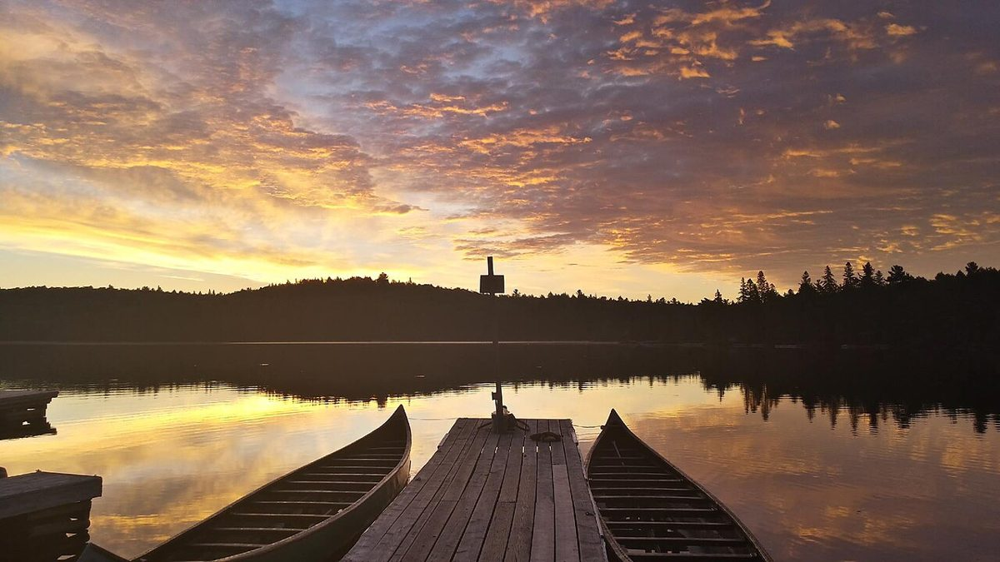
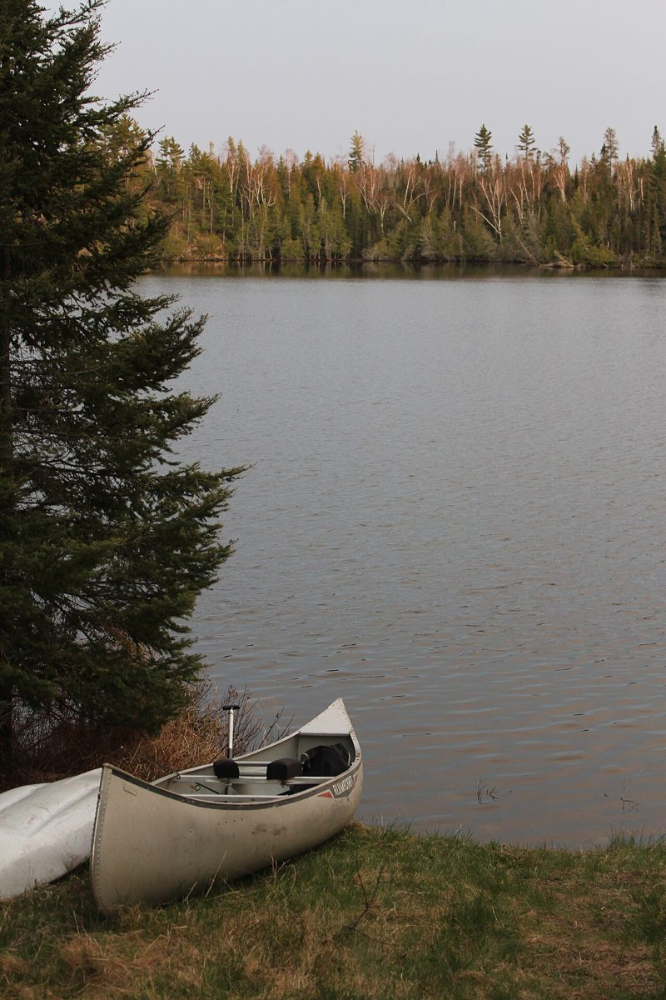
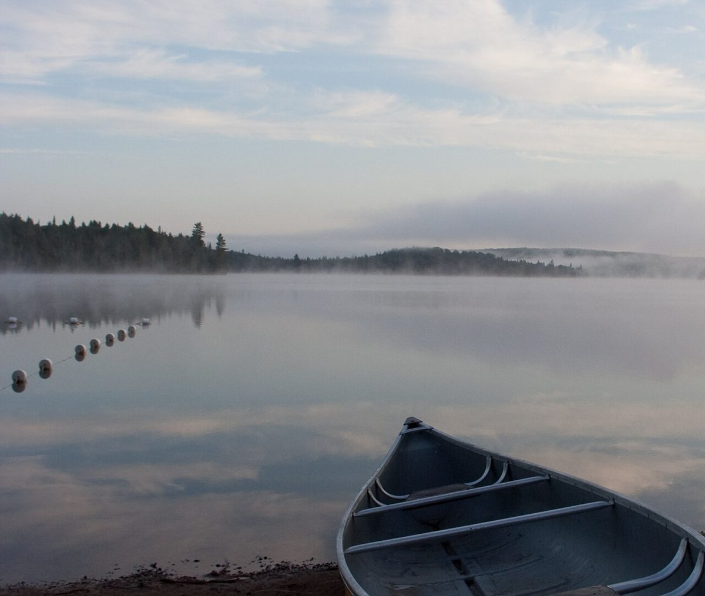
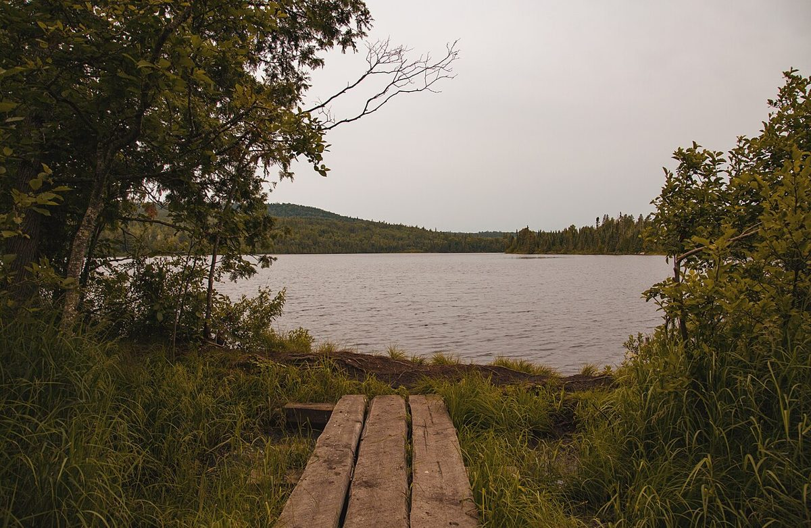

カフェ(コーヒー) / 栃木県さくら市
CANOEISTCOFFEE
栃木県さくら市上河戸にあるカフェ「CANOEIST COFFEE」のご案内ページです。営業時間やメニューなど、詳しいことは準備中。まずはInstagramをのぞいてみてください。
制作側の連想
荷物の口を、三回巻いて留める。
店名の由来は分かりません。制作側は「CANOEIST」という語から、水辺へ出かける人の荷づくりを連想しました。防水のバッグ(ドライバッグ)は、口を三回くるくる巻いてバックルで留める作りが多いそうです。そこでこのサイトも、3回巻いて留める構成にしてみました。お店の理念・由来とは無関係の、制作側の連想です。
1回目
水辺をひと巻き。
写真はさくら市の風景ではありません。水辺のイメージで選んだ、国外のフリー素材です。



2回目
カップをふた巻き。
コーヒーまわりのイメージ写真です。お店で提供しているものではありません。


3回目 / 留める
お店のこと(確認できたものだけ)
| 所在地 | 〒329-1401 栃木県さくら市上河戸948-2 |
|---|---|
| 電話 | 090-3135-8794 |
| 営業時間 | 準備中 |
| 定休日 | 準備中 |
| ご予約 | 準備中 |
| 駐車場 | 準備中 |
| SNS | Instagram @canoeist_coffee |